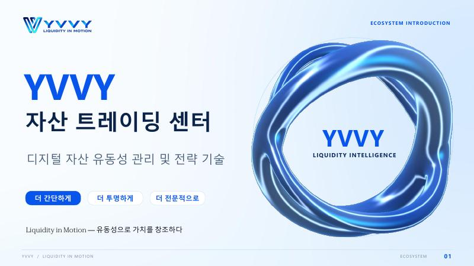

YVVY가 스스로 설명하는 모습과 확인된 것을 구분합니다
이 페이지는 백서 5–10쪽을 기준으로 프로젝트의 자기 설명을 정리하고, 각 항목이 외부에서 검증 가능한지 표시합니다.

YVVY 생태계 소개 백서 표지 (19쪽)
YVVY 생태계 소개(리디자인 SOL 편집본) · 19쪽 · 약 1.7MB
백서 6쪽의 컨셉·포지셔닝·미션·비전을 그대로 옮겼습니다.
유동성은 정적인 자금이 아니라 끊임없이 순환하며 기회를 포착하는 가치 네트워크라고 정의합니다.
사용자 자금과 전문 LP 전략을 연결하고 참여 장벽을 낮춘다고 설명합니다.
복잡한 운영 없이 디지털 자산 유동성 시장에 참여하게 한다는 목표입니다.
전문 전략을 누구나 쉽게 이용하게 한다는 방향입니다.
관찰. 네 항목 모두 방향성 문장이며 측정 가능한 목표(운용 규모, 사용자 수, 목표 기간)가 없습니다.
백서 9쪽의 SOL/USDC 예시를 도식으로 그렸습니다.
LP 자산 공급 → 유동성 풀 → 사용자 스왑 → 수수료 → 규칙에 따라 LP에 분배
출처: YVVY 백서 9쪽 · 거래에서 수수료가 발생하며 플랫폼의 메커니즘과 규칙에 따라 분배됩니다.
여기서 주목할 점: 수수료는 거래가 있을 때만, 가격이 구간 안에 있을 때만 생깁니다. 백서가 말하는 '유휴 유동성'이 문제가 되는 이유입니다.
백서 8쪽의 6개 항목입니다. 오른쪽 열이 이 사이트의 확인 결과입니다.
| 백서의 경쟁력 주장 | 내용 | 공개 근거 |
|---|---|---|
| 전략 기술 해자 | 전문 시장 리서치와 전략 체계로 재사용 가능한 역량 구축 | 없음 |
| 유동성 관리 집중 | 공급이 아닌 관리에 집중, 자본 효율·기회 포착 | 없음 |
| 지능형 모니터링·리스크 관리 | 포지션과 시장 변화를 모니터링하고 동적 조정 | 없음 |
| 투명하고 전문적인 참여 | 복잡한 LP 전략을 간단·투명·전문적으로 | 온체인 기록으로 검증 가능(주소 공개 필요) |
| 사용자 경험 | 풀 선택·구간 관리·리밸런싱·모니터링 불필요 | 앱 화면 공개 자료 없음 |
| 생태계 성장 메커니즘 | 성장 인센티브·협업으로 커뮤니티 확장 | 인센티브 표만 공개(재원 미공개) |
백서 10쪽: 세 종류의 데이터를 비교·분석해 후보 기회 리스트를 만듭니다.
거래량 · 활성도 · 수수료 변화
시장 깊이 · 구간 분포 · 자금 경쟁
변동성 · 집중도 · 컨트랙트 및 진입·청산 비용
기회와 리스크를 함께 비교해 반복 검색을 줄이고, 수익 숫자만 보는 관점을 지양한다고 합니다.
AI는 판단 지원, 실행은 시스템 규칙, 통제는 리스크 관리라는 3단 구조입니다. 모델·검증 방식은 공개되지 않았습니다.
| 백서 기재 | 확인 상태 |
|---|---|
| WHALELAND LABS가 출자해 인큐베이팅한 핀테크 기업 | 공개 자료에서 근거 미확인 |
| 핵심 팀은 글로벌 주요 트레이딩 기관 출신 원년 멤버 | 이름·경력·이전 소속 미공개 |
| 트레이딩 시스템·마켓 메이킹·리스크 관리 경험 | 증빙 없음 |
| 자체 개발 AI 전략 시스템 | 기술 문서·감사 보고서 없음 |
판단 기준. 자금을 맡기는 구조에서는 운영 주체의 신원, 법인, 라이선스가 확인되어야 합니다. 현재 공개된 범위만으로는 이를 확인할 수 없습니다.
회사가 Solana의 Meteora를 사용한다는 정보가 있으나 백서에는 없습니다. 아래는 확인 방법입니다.
※ 운용 실적 페이지는 이 사이트가 접근하지 못해 수치를 싣지 않았습니다. 직접 확인한 내용을 전달해 주시면 차트로 반영할 수 있습니다.